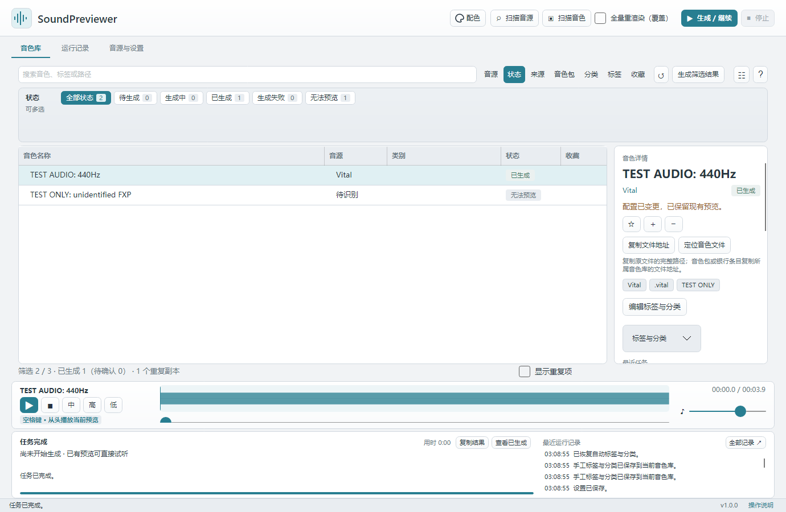

操作说明首页
SoundPreviewer 把合成器音色生成短试听片段，让你在一个本地音色库里搜索、筛选和播放。已有预览无需打开 DAW 或再次加载音源。
这份操作说明随 1.0.0 程序提供。页面、截图和章节链接均可离线打开；GitHub、运行库下载及技术记录链接需要联网。本文以简体中文界面为例，英文界面使用同样的页面布局。
从哪里开始
- 第一次使用：快速开始按“最小配置 → 单音色测试 → 批量使用”完成一条完整路径。
- 尚未安装：安装与启动选择平台、解压或安装，确认程序目录可写。
- 换了音源或插件版本：音源与生成环境核对格式、插件架构与生成方式。
- 准备批量生成：生成与试听了解模板、队列范围、内存、状态与播放器。
- 查找和标记音色：音色库整理介绍目录、搜索、多选筛选、分类、标签和 DAW 文件地址。
- 更新、搬移或清理：数据、备份与升级说明 Preview、Config、导入旧库与压缩。
- 切换语言或配色：语言与外观介绍界面设置与可编辑 JSON。
- 出现错误：常见问题按提示定位问题并复制反馈信息。
打开方式
在软件窗口右下角点击 「操作说明」，由系统默认浏览器打开本首页。也可直接双击程序资源目录内的 操作说明/index.html。Windows 安装版和免安装版位于 EXE 旁；macOS 位于 .app/Contents/MacOS/操作说明，可通过访达的「显示包内容」找到。
说明文件随安装包更新。单独复制 EXE 会缺少所需资源，请保留完整程序目录。

支持创作
如果这个工具帮你节省了试音时间，可以扫描下图支持后续开发。